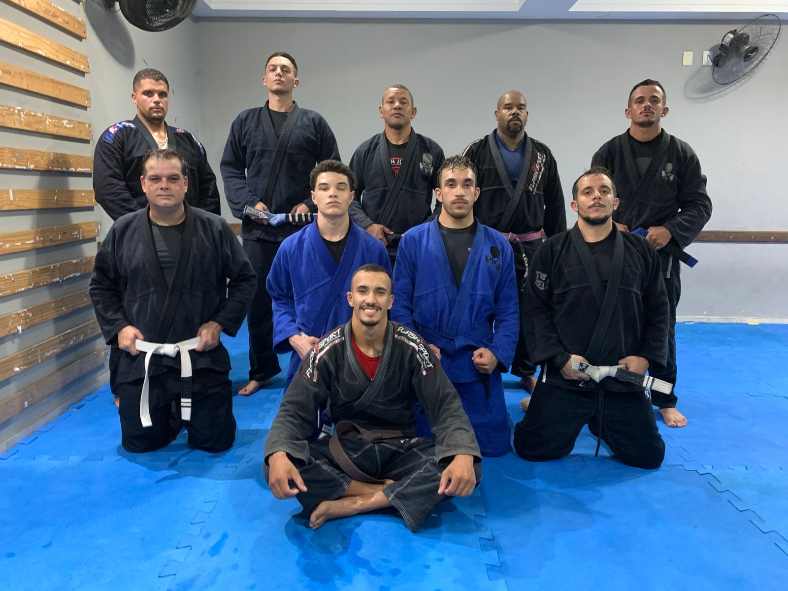

Comece com segurança e base técnica
Primeiros passos com orientação clara, adaptação ao tatame e acompanhamento próximo para ganhar confiança desde a primeira aula.
Treine com o professor faixa preta Gilson Batista em uma academia de jiu-jitsu no bairro São Luís, em Volta Redonda/RJ, preparada para receber crianças, adultos, mulheres e iniciantes que buscam disciplina, técnica, defesa pessoal e evolução real no tatame.
As turmas da Gilson Batista Jiu-Jitsu foram organizadas para atender quem quer começar no esporte, desenvolver disciplina desde cedo ou evoluir tecnicamente com mais intensidade no tatame.
Primeiros passos com orientação clara, adaptação ao tatame e acompanhamento próximo para ganhar confiança desde a primeira aula.
Aulas pensadas para desenvolver coordenação, respeito, foco e evolução gradual em um ambiente acolhedor no bairro São Luís.
Turma voltada para condicionamento, repertório técnico, defesa pessoal e evolução contínua para quem busca treino sério em Volta Redonda/RJ.
Treinos voltados para mulheres que querem mais confiança, preparo físico e técnicas aplicáveis à rotina com orientação responsável.
As aulas foram organizadas para facilitar a constância de crianças, adultos e iniciantes que preferem treinar no fim do dia com rotina clara e foco.
Entenda a progressão de faixas com metas claras, disciplina de longo prazo e compromisso com o aprendizado técnico dentro da academia.
Início da jornada com foco em postura, defesa, movimentação básica, adaptação ao ritmo de treino e construção de base sólida.
Consolidação dos fundamentos, leitura de posições, melhora do repertório técnico e mais segurança na prática diária.
Fase de refinamento, criatividade no jogo, maturidade tática e domínio mais consistente das principais situações do tatame.
Etapa de lapidação avançada, pressão, estratégia, liderança no treino e evolução técnica em alto nível.
Representa excelência, responsabilidade, referência para a equipe e compromisso com a tradição e a técnica do jiu-jitsu.
Observação: a progressão de faixa pode considerar frequência, comportamento, evolução técnica, dedicação e avaliação direta do professor.
As faixas infantis ajudam a criança a evoluir com respeito, alegria no aprendizado e desenvolvimento progressivo dentro do tatame.
Primeiro contato com o jiu-jitsu, aprendendo regras, respeito e movimentos simples com segurança.
A criança ganha mais coordenação, atenção e confiança para executar os fundamentos básicos.
Mostra mais foco nos treinos, melhora o equilíbrio e começa a entender melhor as técnicas.
Desenvolve disciplina, controle e responsabilidade, evoluindo com mais autonomia no treino.
Representa mais maturidade, compromisso e segurança na prática do jiu-jitsu infantil.
Importante: na graduação infantil, a evolução considera frequência, comportamento, dedicação e o desenvolvimento da criança.
A galeria mostra um pouco da rotina da academia, da energia das turmas e do ambiente de treino em Volta Redonda.

Treinos para crianças com disciplina, respeito, desenvolvimento motor e segurança no tatame.
Treino técnico, evolução da equipe e rotina no tatame com intensidade, respeito e constância.

Conquistas que refletem disciplina, mérito, evolução contínua e compromisso com o treino.

Ambiente familiar, senso de pertencimento e parceria para crescer junto dentro e fora do tatame.

Treinos consistentes para desenvolver técnica, condicionamento, defesa pessoal e confiança.

Estrutura organizada para receber alunos iniciantes, crianças e adultos com conforto e segurança.
A academia está em um ponto de fácil acesso para alunos do São Luís e de outras regiões de Volta Redonda que buscam jiu-jitsu infantil, jiu-jitsu adulto, defesa pessoal feminina e aula experimental com atendimento rápido.
A academia valoriza técnica, disciplina e acompanhamento próximo para que cada aluno evolua com segurança, confiança e constância no tatame.
Escolha o canal mais prático para falar com a academia, pedir localização ou tirar dúvidas sobre a turma ideal para o seu objetivo.
Entre em contato para confirmar a turma ideal, alinhar objetivos e receber a localização da academia sem complicação.
Respostas rápidas para quem quer começar a treinar ou entender melhor a rotina da Gilson Batista Jiu-Jitsu.
Sim. Você pode iniciar e conhecer a metodologia da academia antes de investir no uniforme completo.
As aulas acontecem às segundas, quartas e quintas. A turma infantil treina às 18h30 e a turma adulta às 19h30.
O agendamento é feito diretamente pelo WhatsApp da academia. Assim você tira dúvidas, confirma a turma e recebe a localização sem demora.
Sim. A academia conta com turma infantil, turma adulta e treinos voltados para defesa pessoal feminina e iniciantes.